| Presenta | Jefte Abimael López Jarquín |
| Matrícula | 20161240 |
| Docente | Dra. Ruth de la Peña Martínez |
| Programa | Verano Científico |
| Fecha | Julio de 2026 |
Modulos: Descripciones de Puesto (DDP) · Diagnostico de Necesidades (DDN) · Plan Maestro de Entrenamiento Cumplimiento normativo: IATF 16949:2016 · ISO 9001:2015 Herramienta: Grafana 13 (OSS) + PostgreSQL 15 Proyecto: Verano Cientifico
El presente documento describe el diseno, la implementacion y la interpretacion de una plataforma de inteligencia de negocio (Business Intelligence) construida sobre Grafana y PostgreSQL para el Sistema de Entrenamiento Electronico (SEE) de una organizacion manufacturera del sector automotriz.
El SEE digitaliza tres procesos criticos de la gestion del talento y la calidad:
La solucion entrega 16 tableros (dashboards) con mas de 35 indicadores (KPIs), alimentados por una base de datos con 600 empleados, 18 departamentos, 3 plantas, 150 puestos y 3 anios de historia. Los indicadores estan alineados a los requisitos de competencia y toma de conciencia de IATF 16949:2016 (clausula 7.2/7.3) y al control de informacion documentada de ISO 9001:2015 (clausula 7.5).
Los resultados de referencia del sistema muestran un 93% de cumplimiento de competencias (558 de 600 colaboradores competentes), una reduccion promedio de tiempos administrativos superior al 85% frente al proceso manual, y una trazabilidad completa de evidencias y autorizaciones lista para auditoria.
En la industria automotriz, la norma IATF 16949 exige demostrar que el personal que afecta la calidad del producto es competente con base en educacion, formacion, habilidades y experiencia, y que la organizacion conserva informacion documentada como evidencia de dicha competencia. Gestionar esto de forma manual (hojas de calculo, formatos en papel, firmas fisicas) es lento, propenso a errores y dificil de auditar.
El Sistema de Entrenamiento Electronico (SEE) nace para digitalizar este proceso. Sin embargo, contar con los datos no basta: la direccion, los gerentes de departamento y los auditores necesitan visualizar el estado de la capacitacion en tiempo real para tomar decisiones. Ahi entra esta plataforma de dashboards, que convierte los datos operativos del SEE en informacion accionable.
Objetivo general. Disenar e implementar una plataforma de dashboards en Grafana que permita monitorear, analizar y auditar el desempeno del Sistema de Entrenamiento Electronico, alineada a IATF 16949 e ISO 9001.
Objetivos especificos.
Alcance. El proyecto cubre la capa analitica (visualizacion e indicadores) sobre datos simulados representativos. No incluye la captura transaccional del SEE (formularios de alta/edicion), que corresponde al sistema operativo fuente.
El SEE se compone de tres modulos encadenados:
Cada puesto de la organizacion cuenta con una descripcion formal que define su objetivo y, sobre todo, el conjunto de competencias requeridas. La DDP sigue un flujo documental: es elaborada por el manejador (MNJ) del departamento, enviada a Recursos Humanos y finalmente autorizada (firmada). Una DDP autorizada es la base para poder evaluar al personal y es un documento controlado bajo ISO 9001.
Para cada colaborador se evalua, competencia por competencia de su puesto, si es competente o presenta una brecha. Cuando existe evidencia (constancia, certificado, practica validada) se registra la evidencia digital asociada. El DDN clasifica las brechas por prioridad (Alta, Media, Baja) para orientar el plan de capacitacion.
Con las brechas identificadas se construye, por departamento y anio fiscal, el Plan Maestro: el catalogo de cursos, su programacion semanal, el estatus de cada curso (Programado, En curso, Completado, Cancelado) y el flujo de firmas (MNJ del departamento, MNJ de entrenamiento y Gerente de Planta). El Plan Maestro cierra el ciclo: detecta la brecha (DDN), la atiende con un curso y vuelve a evaluar.
La solucion sigue una arquitectura de tres capas: la fuente de datos, el motor analitico y la capa de visualizacion. El siguiente diagrama resume el flujo de la informacion:
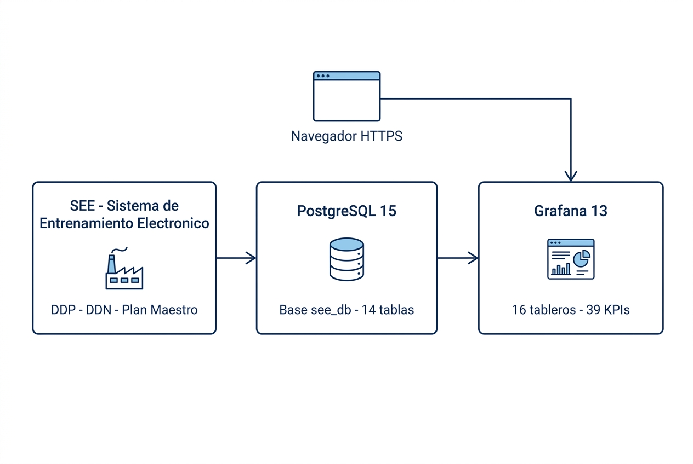
Figura 1. Flujo de datos: el SEE alimenta PostgreSQL, y Grafana consulta la base para presentar los tableros al usuario.
Navegador --HTTPS--> Grafana 13 (OSS) --> PostgreSQL 15 (base see_db)
| 16 dashboards provisionados
| 1 fuente de datos (uid: see_pg)
| Idioma es-ES, tema oscuro, acceso anonimo de lectura
marcusolsson-calendar-panel para el reporte de cursos
programados.Decisiones de diseno relevantes:
/grafana en el entorno de nube para no colisionar con
la ruta reservada /api; en local (Docker) se sirve en la raiz del puerto 3001.jsonData.database = see_db en la fuente de datos (requisito de Grafana 10+),
ademas del idioma es-ES para toda la interfaz.La base see_db implementa un modelo relacional normalizado. Tablas principales:
| Tabla | Descripcion |
|---|---|
plantas |
Catalogo de plantas (3) y su ubicacion. |
departamentos |
Catalogo de departamentos (18). |
areas |
Areas por departamento (55). |
puestos |
Catalogo de puestos (150) con su clasificacion. |
empleados |
Colaboradores (600), su puesto, planta, area y estatus activo. |
descripciones_puesto |
DDP (150): revision, fechas de creacion/envio/aprobacion, autorizada. |
competencias_puesto |
Competencias requeridas por DDP (~900), con su tipo. |
diagnosticos |
Evaluaciones del DDN: competente, prioridad, evidencia, vencimiento. |
cursos |
Cursos y sus horas. |
plan_maestro |
Plan Maestro por departamento y anio fiscal (54) con firmas. |
cursos_programados |
Programacion semanal de cursos y su estatus. |
cursos_participantes |
Asistencia de colaboradores a cursos. |
accesos_diarios |
Serie de tiempo de uso del sistema (3 anios). |
metricas_productividad |
Comparativo de tiempos antes/despues del SEE. |
rep_competencias, rep_brechas, rep_ddn |
Cifras oficiales de referencia del reporte. |
Regla de evaluacion vigente. Como un colaborador puede reevaluarse varias veces, los
indicadores usan la ultima evaluacion por combinacion colaborador-competencia mediante
DISTINCT ON (no_reloj, id_competencia) ... ORDER BY fecha_registro DESC.
Ante la ausencia de acceso a la base productiva, se genero un conjunto de datos ficticio pero realista con distribuciones coherentes (antiguedad, rotacion ~6%, prioridades de brecha, estacionalidad de uso). Las cifras de referencia de los reportes clave se ajustaron a los valores oficiales del documento simulador G2:
| Indicador de referencia | Valor |
|---|---|
| Colaboradores competentes | 558 |
| Colaboradores con brecha | 42 |
| % de cumplimiento de competencias | 93% |
| Competencias por area normativa | Seguridad 596/600, Calidad 589/600, Manufactura 545/580, Lean 381/420, IATF 360/400, ISO 372/400 |
| Brechas por departamento | Produccion 25, Ingenieria 12, Calidad 8, Logistica 6, RH 3 |
Los datos se regeneran de forma reproducible con generar_datos.py.
La solucion entrega 16 tableros organizados en la carpeta SEE - Sistema de Entrenamiento. Para cada uno se indica su objetivo, sus paneles y como interpretarlo.
Objetivo. Ofrecer a la direccion una vista integral del estado del SEE en una sola pantalla. Como leerlo. Las tarjetas superiores resumen los cuatro indicadores clave (empleados activos, cumplimiento de competencias, avance del Plan Maestro y DDP autorizadas); los medidores muestran el semaforo global; la dona compara competentes contra brechas; las barras ordenan a los departamentos de mayor a menor cumplimiento; y la serie de tiempo evidencia la adopcion del sistema. Los filtros de Planta y Departamento permiten acotar todo el tablero. Decision tipica. Detectar de inmediato si algun indicador global esta en rojo y en que area concentrarse.
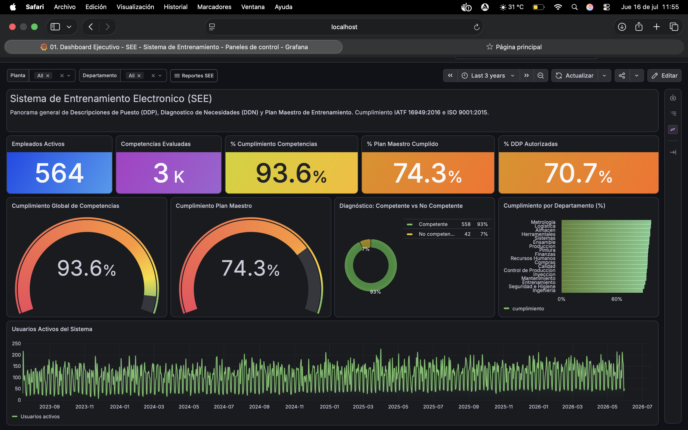
Vista del tablero «01. Dashboard Ejecutivo» en Grafana.
Paneles:
| Panel | Visualizacion |
|---|---|
| Empleados Activos | Tarjeta KPI |
| Competencias Evaluadas | Tarjeta KPI |
| % Cumplimiento Competencias | Tarjeta KPI |
| % Plan Maestro Cumplido | Tarjeta KPI |
| % DDP Autorizadas | Tarjeta KPI |
| Cumplimiento Global de Competencias | Medidor (gauge) |
| Cumplimiento Plan Maestro | Medidor (gauge) |
| Diagnóstico: Competente vs No Competente | Grafica de pastel/dona |
| Cumplimiento por Departamento (%) | Grafica de barras |
| Usuarios Activos del Sistema | Serie de tiempo |
Objetivo. Comparar el desempeno de los 18 departamentos. Como leerlo. La barra horizontal ordena de mayor a menor cumplimiento; la tabla detalla evaluaciones, competentes, brechas y porcentaje. La columna de brechas se colorea para resaltar los focos de atencion. Decision tipica. Priorizar apoyo a los departamentos por debajo de la meta (>= 95%).
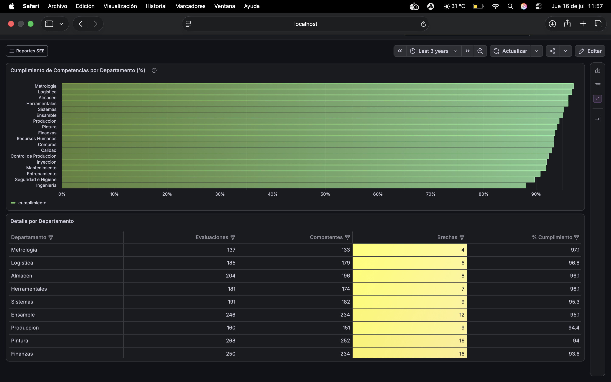
Vista del tablero «02. Cumplimiento por Departamento» en Grafana.
Paneles:
| Panel | Visualizacion |
|---|---|
| Cumplimiento de Competencias por Departamento (%) | Grafica de barras |
| Detalle por Departamento | Tabla |
Objetivo. Evaluar el desempeno entre las tres plantas. Como leerlo. Las barras y la tabla muestran el porcentaje por sitio; la grafica de pastel refleja la distribucion de personal. Decision tipica. Identificar plantas rezagadas y equilibrar recursos de capacitacion.
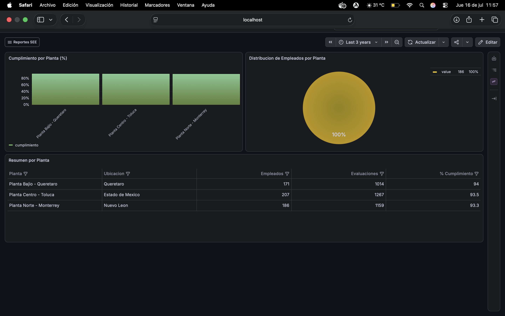
Vista del tablero «03. Cumplimiento por Planta» en Grafana.
Paneles:
| Panel | Visualizacion |
|---|---|
| Cumplimiento por Planta (%) | Grafica de barras |
| Distribucion de Empleados por Planta | Grafica de pastel/dona |
| Resumen por Planta | Tabla |
Objetivo. Analizar competencias requeridas frente a logradas. Como leerlo. Las barras apiladas (cifras oficiales del documento) muestran, por area normativa, las competencias cumplidas y la brecha, cuya suma es el total requerido; la tabla anade el porcentaje. Un segundo grafico apila logradas y brechas por puesto. Decision tipica. Enfocar cursos en las areas con mayor brecha relativa (p. ej. IATF y Lean).
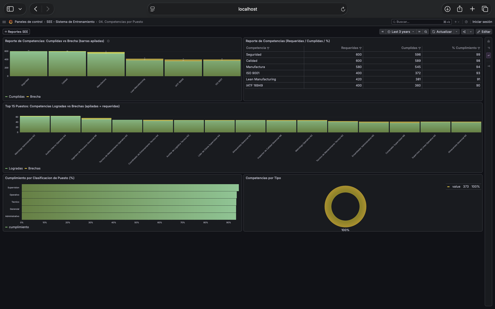
Vista del tablero «04. Competencias por Puesto» en Grafana.
Paneles:
| Panel | Visualizacion |
|---|---|
| Reporte de Competencias: Cumplidas vs Brecha (barras apiladas) | Grafica de barras |
| Reporte de Competencias (Requeridas / Cumplidas / %) | Tabla |
| Top 15 Puestos: Competencias Logradas vs Brechas (apiladas = requeridas) | Grafica de barras |
| Cumplimiento por Clasificacion de Puesto (%) | Grafica de barras |
| Competencias por Tipo | Grafica de pastel/dona |
Objetivo. Localizar donde faltan competencias. Como leerlo. El grafico y la tabla de brechas por departamento (cifras del documento) muestran las competencias faltantes; el mapa de calor cruza departamento y tipo de competencia, coloreando las celdas con mas brechas. Decision tipica. Construir el Plan Maestro atacando primero las mayores concentraciones de brecha.
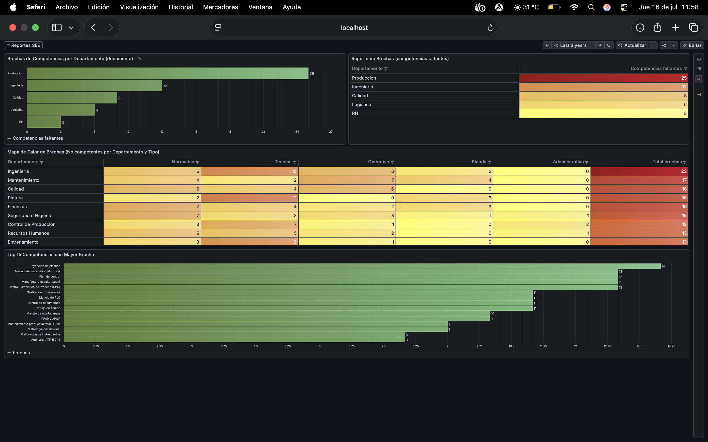
Vista del tablero «05. Brechas de Competencias» en Grafana.
Paneles:
| Panel | Visualizacion |
|---|---|
| Brechas de Competencias por Departamento (documento) | Grafica de barras |
| Reporte de Brechas (competencias faltantes) | Tabla |
| Mapa de Calor de Brechas (No competentes por Departamento y Tipo) | Tabla |
| Top 15 Competencias con Mayor Brecha | Grafica de barras |
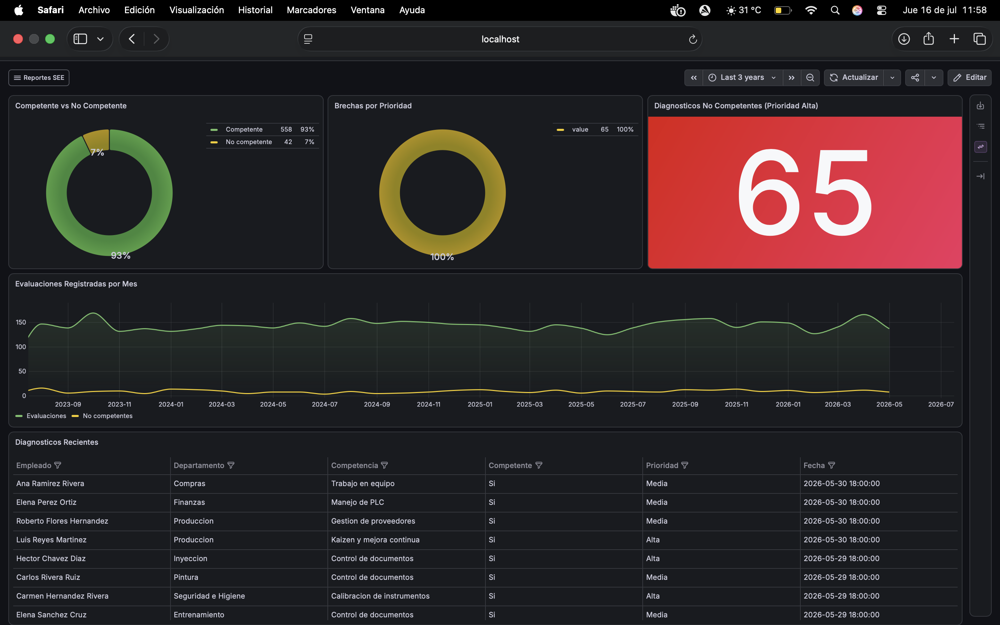
Vista del tablero «06. Diagnóstico de Necesidades (DDN)» en Grafana.
Paneles:
| Panel | Visualizacion |
|---|---|
| Competente vs No Competente | Grafica de pastel/dona |
| Brechas por Prioridad | Grafica de pastel/dona |
| Diagnosticos No Competentes (Prioridad Alta) | Tarjeta KPI |
| Evaluaciones Registradas por Mes | Serie de tiempo |
| Diagnosticos Recientes | Tabla |
Objetivo. Seguir la ejecucion del plan anual de capacitacion. Como leerlo. El cronograma lista los cursos con su semana, fechas y estatus; la dona y las barras apiladas resumen el estatus por departamento; la tabla muestra el estado de firmas por departamento y anio fiscal. Decision tipica. Reprogramar cursos atrasados y completar firmas pendientes.
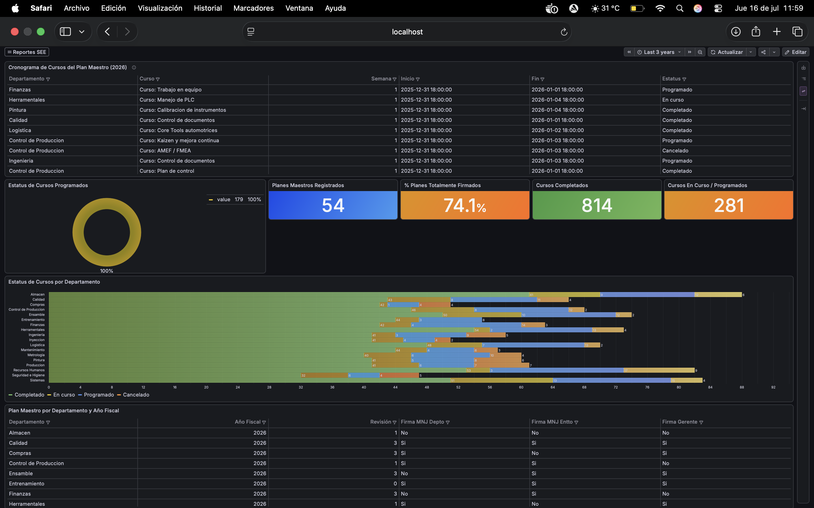
Vista del tablero «07. Plan Maestro de Entrenamiento» en Grafana.
Paneles:
| Panel | Visualizacion |
|---|---|
| Cronograma de Cursos del Plan Maestro (2026) | Tabla |
| Estatus de Cursos Programados | Grafica de pastel/dona |
| Planes Maestros Registrados | Tarjeta KPI |
| % Planes Totalmente Firmados | Tarjeta KPI |
| Cursos Completados | Tarjeta KPI |
| Cursos En Curso / Programados | Tarjeta KPI |
| Estatus de Cursos por Departamento | Grafica de barras |
| Plan Maestro por Departamento y Año Fiscal | Tabla |
Objetivo. Planear el calendario de cursos. Como leerlo. El Calendario ubica cada curso en su fecha; las barras muestran la carga por semana y por anio; la tabla lista los proximos cursos. Decision tipica. Balancear la carga de cursos a lo largo del anio y evitar semanas saturadas.
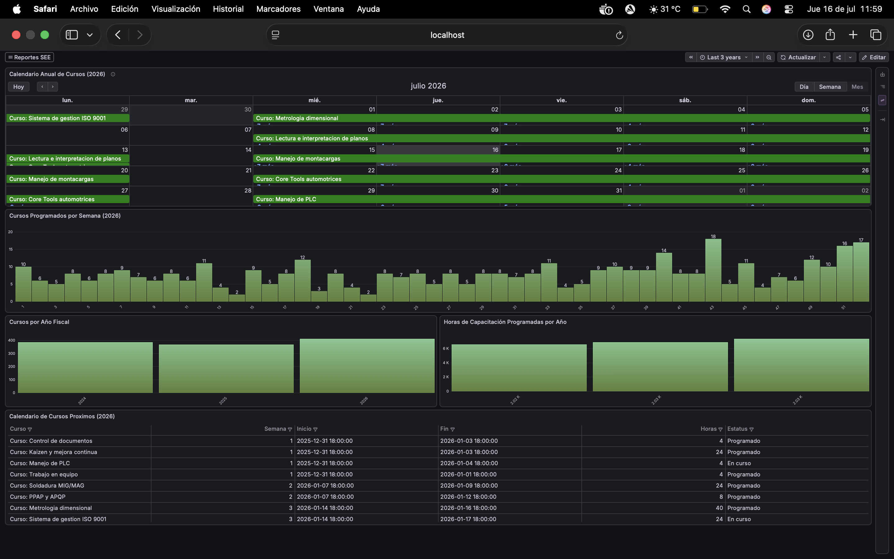
Vista del tablero «08. Cursos Programados» en Grafana.
Paneles:
| Panel | Visualizacion |
|---|---|
| Calendario Anual de Cursos (2026) | Calendario |
| Cursos Programados por Semana (2026) | Grafica de barras |
| Cursos por Año Fiscal | Grafica de barras |
| Horas de Capacitación Programadas por Año | Grafica de barras |
| Calendario de Cursos Proximos (2026) | Tabla |
Objetivo. Verificar el soporte documental de la competencia. Como leerlo. Las tarjetas resumen evidencias cargadas, porcentaje con evidencia y competentes sin evidencia; las barras y la tabla detallan por departamento y registro. Decision tipica. Regularizar expedientes de competentes que aun no tienen evidencia cargada.
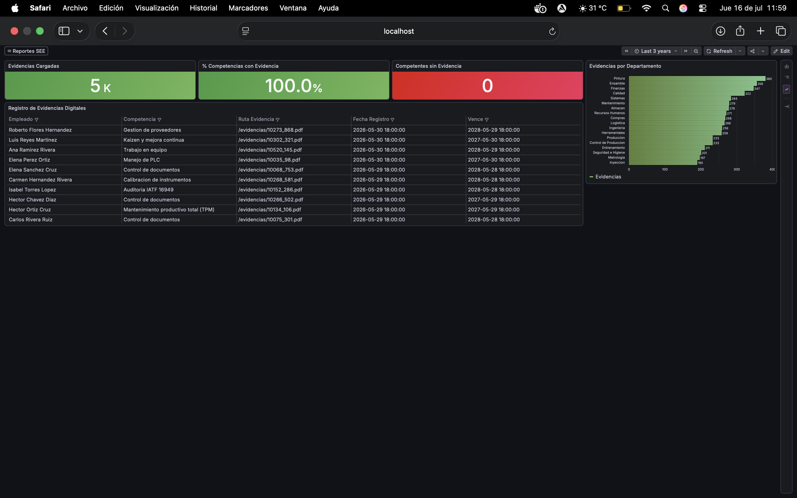
Vista del tablero «09. Evidencias Digitales» en Grafana.
Paneles:
| Panel | Visualizacion |
|---|---|
| Evidencias Cargadas | Tarjeta KPI |
| % Competencias con Evidencia | Tarjeta KPI |
| Competentes sin Evidencia | Tarjeta KPI |
| Evidencias por Departamento | Grafica de barras |
| Registro de Evidencias Digitales | Tabla |
Objetivo. Demostrar el cumplimiento de la clausula 7.2/7.3 de IATF 16949. Como leerlo. Los medidores muestran el cumplimiento de competencias criticas (tipo Normativa), DDP autorizadas y planes firmados por el Gerente de Planta; la barra de medida detalla por competencia normativa; la tabla resume el estatus normativo por departamento. Decision tipica. Cerrar brechas normativas antes de una auditoria de certificacion.
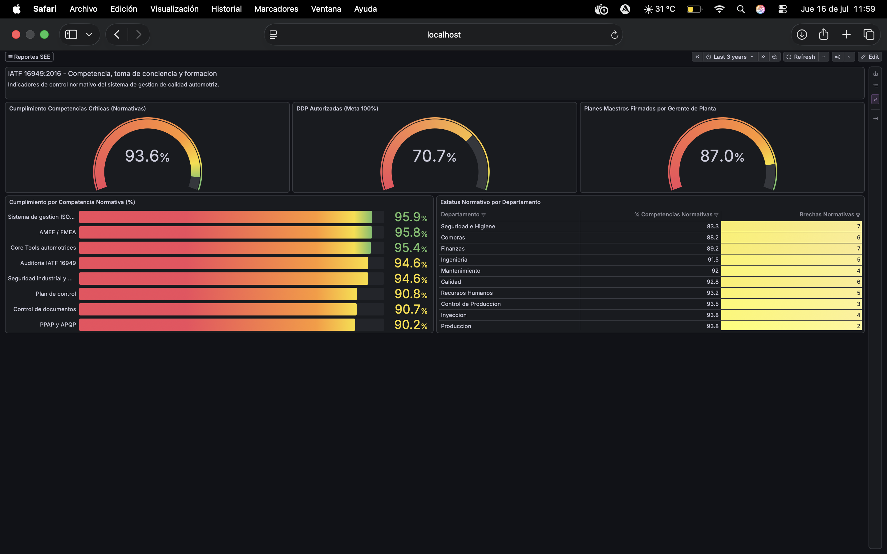
Vista del tablero «10. Indicadores IATF 16949» en Grafana.
Paneles:
| Panel | Visualizacion |
|---|---|
| Cumplimiento Competencias Criticas (Normativas) | Medidor (gauge) |
| DDP Autorizadas (Meta 100%) | Medidor (gauge) |
| Planes Maestros Firmados por Gerente de Planta | Medidor (gauge) |
| Cumplimiento por Competencia Normativa (%) | Barra de medida |
| Estatus Normativo por Departamento | Tabla |
Objetivo. Evidenciar el control de informacion documentada (clausula 7.5). Como leerlo. Los medidores y barras muestran DDP controladas/autorizadas frente a pendientes; la serie de tiempo grafica la creacion de documentos por mes. Decision tipica. Asegurar que el 100% de las DDP relevantes esten autorizadas y vigentes.
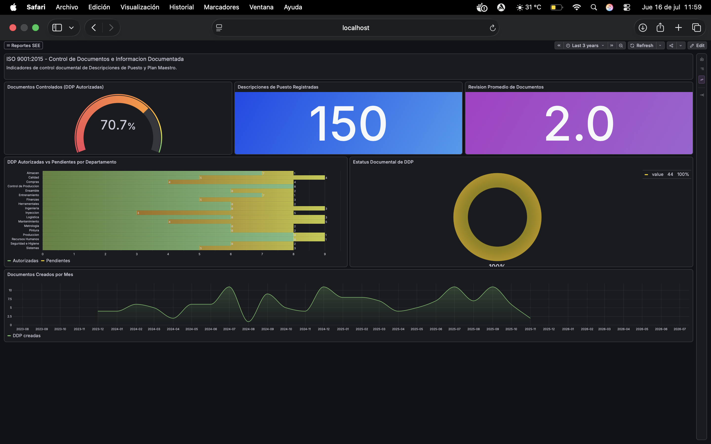
Vista del tablero «11. Indicadores ISO 9001» en Grafana.
Paneles:
| Panel | Visualizacion |
|---|---|
| Documentos Controlados (DDP Autorizadas) | Medidor (gauge) |
| Descripciones de Puesto Registradas | Tarjeta KPI |
| Revision Promedio de Documentos | Tarjeta KPI |
| DDP Autorizadas vs Pendientes por Departamento | Grafica de barras |
| Estatus Documental de DDP | Grafica de pastel/dona |
| Documentos Creados por Mes | Serie de tiempo |
Objetivo. Auditar el flujo de firmas de las DDP. Como leerlo. Las tarjetas muestran el tiempo promedio de autorizacion (dias), pendientes de firma y porcentaje autorizado a tiempo; la barra compara el tiempo por departamento; la tabla detalla el flujo creada -> enviada -> autorizada con los dias transcurridos. Decision tipica. Agilizar las autorizaciones que exceden la meta de 3 dias.
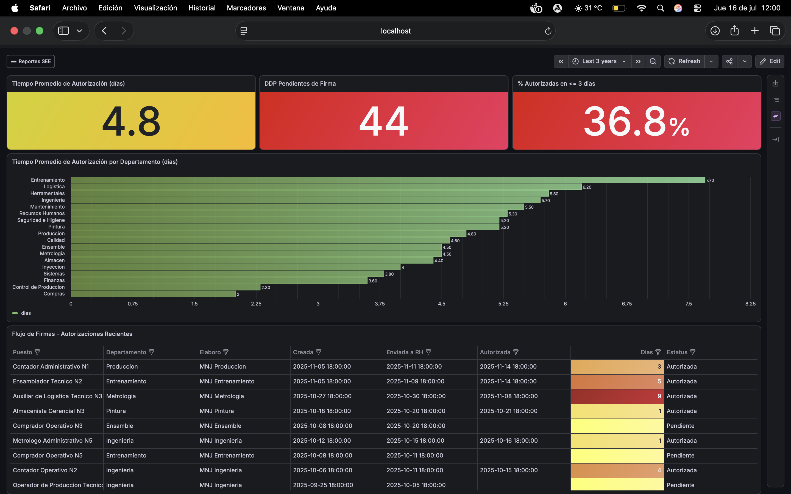
Vista del tablero «12. Trazabilidad de Autorizaciones» en Grafana.
Paneles:
| Panel | Visualizacion |
|---|---|
| Tiempo Promedio de Autorización (días) | Tarjeta KPI |
| DDP Pendientes de Firma | Tarjeta KPI |
| % Autorizadas en <= 3 dias | Tarjeta KPI |
| Tiempo Promedio de Autorización por Departamento (días) | Grafica de barras |
| Flujo de Firmas - Autorizaciones Recientes | Tabla |
Objetivo. Cuantificar el impacto de digitalizar el proceso. Como leerlo. Las barras comparan el tiempo (minutos) de cada proceso antes (manual) y despues (SEE); las tarjetas resumen la reduccion promedio y las horas ahorradas. Decision tipica. Justificar la inversion y replicar la mejora en otros procesos.
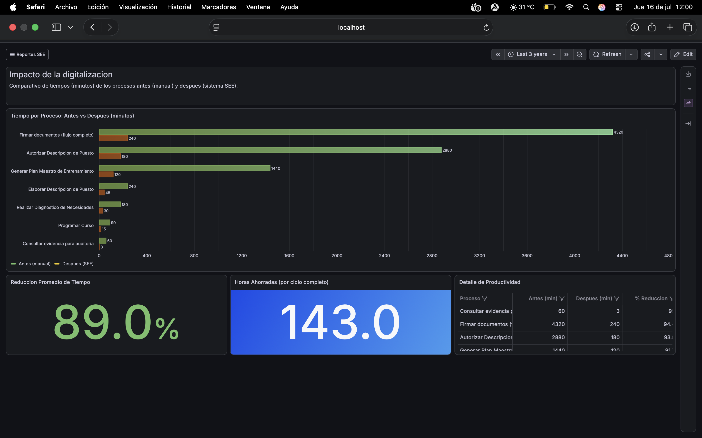
Vista del tablero «13. Productividad del Sistema» en Grafana.
Paneles:
| Panel | Visualizacion |
|---|---|
| Tiempo por Proceso: Antes vs Despues (minutos) | Grafica de barras |
| Reduccion Promedio de Tiempo | Tarjeta KPI |
| Horas Ahorradas (por ciclo completo) | Tarjeta KPI |
| Detalle de Productividad | Tabla |
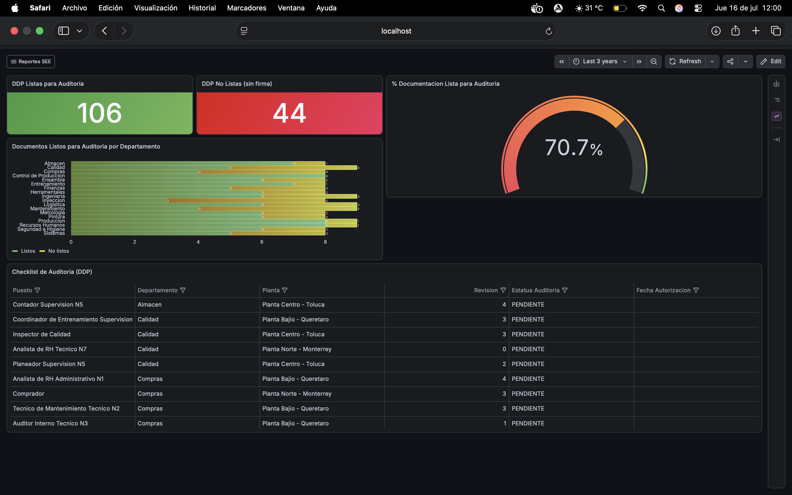
Vista del tablero «14. Auditorías» en Grafana.
Paneles:
| Panel | Visualizacion |
|---|---|
| DDP Listas para Auditoria | Tarjeta KPI |
| DDP No Listas (sin firma) | Tarjeta KPI |
| % Documentacion Lista para Auditoria | Medidor (gauge) |
| Documentos Listos para Auditoria por Departamento | Grafica de barras |
| Checklist de Auditoria (DDP) | Tabla |
Objetivo. Monitorear la adopcion del sistema. Como leerlo. Las tarjetas resumen el promedio diario, el pico y las sesiones totales; la serie de tiempo y las barras mensuales muestran la tendencia de uso. Decision tipica. Detectar caidas de uso que indiquen problemas de adopcion o disponibilidad.
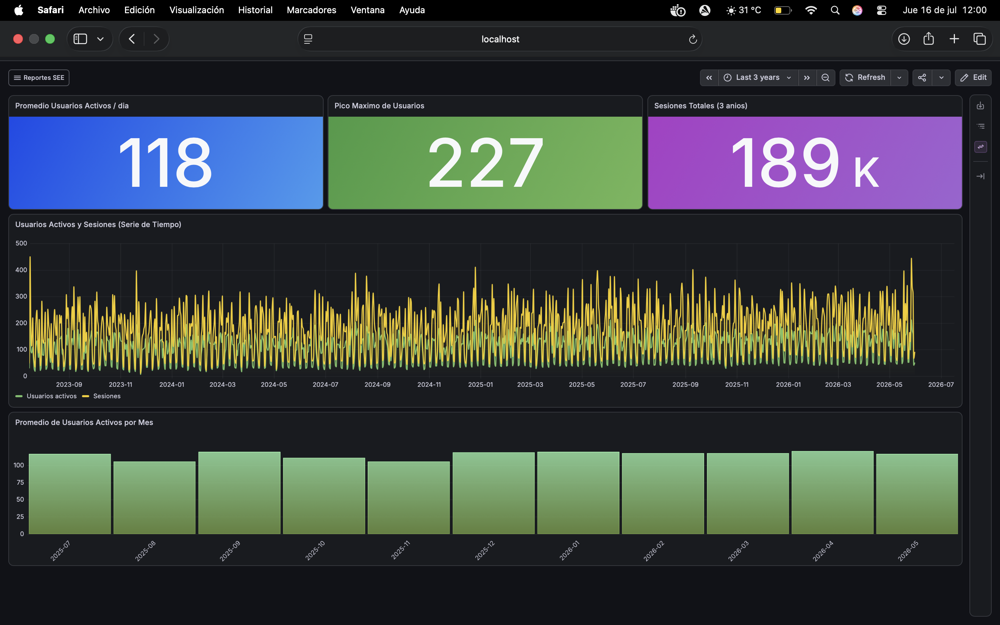
Vista del tablero «15. Usuarios Activos» en Grafana.
Paneles:
| Panel | Visualizacion |
|---|---|
| Promedio Usuarios Activos / dia | Tarjeta KPI |
| Pico Maximo de Usuarios | Tarjeta KPI |
| Sesiones Totales (3 anios) | Tarjeta KPI |
| Usuarios Activos y Sesiones (Serie de Tiempo) | Serie de tiempo |
| Promedio de Usuarios Activos por Mes | Grafica de barras |
Objetivo. Anticipar riesgos. Como leerlo. Las tarjetas alertan sobre competencias/certificaciones por vencer, cursos a programar y departamentos en riesgo; las barras muestran los departamentos de mayor riesgo; la tendencia y la tabla listan lo que vence en los proximos 60 dias. Decision tipica. Reprogramar recertificaciones y reforzar departamentos en riesgo antes de que caigan en incumplimiento.
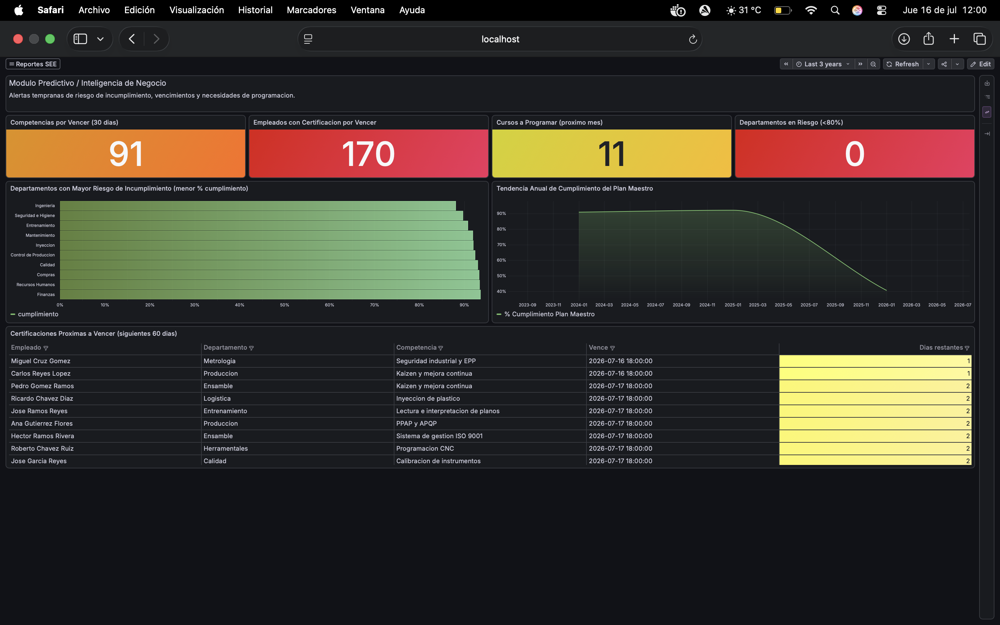
Vista del tablero «16. Módulo de Reportes Predictivos» en Grafana.
Paneles:
| Panel | Visualizacion |
|---|---|
| Competencias por Vencer (30 dias) | Tarjeta KPI |
| Empleados con Certificacion por Vencer | Tarjeta KPI |
| Cursos a Programar (proximo mes) | Tarjeta KPI |
| Departamentos en Riesgo (<80%) | Tarjeta KPI |
| Departamentos con Mayor Riesgo de Incumplimiento (menor % cumplimiento) | Grafica de barras |
| Tendencia Anual de Cumplimiento del Plan Maestro | Serie de tiempo |
| Certificaciones Proximas a Vencer (siguientes 60 dias) | Tabla |
Cada indicador se define con su formula, meta, frecuencia de revision e interpretacion. Los umbrales de color siguen el semaforo: rojo (critico), ambar/amarillo (en observacion) y verde (cumple).
| # | KPI | Formula | Meta | Frec. | Dashboard |
|---|---|---|---|---|---|
| 1 | % Cumplimiento de competencias | Competencias competentes / evaluadas x 100 | >= 95% | Mensual | Ejecutivo, Depto, Planta | | 2 | Empleados activos | Conteo de empleados con estatus activo | - | Diario | Ejecutivo | | 3 | Competencias evaluadas | Conteo de ultimas evaluaciones | - | Mensual | Ejecutivo | | 4 | % Cumplimiento del Plan Maestro | Cursos completados / (programados no cancelados) x 100 | >= 90% | Mensual | Ejecutivo, Plan Maestro | | 5 | % DDP autorizadas | DDP firmadas / registradas x 100 | 100% | Semanal | Ejecutivo, ISO 9001 | | 6 | Cumplimiento global (gauge) | Igual que % cumplimiento de competencias | >= 95% | Mensual | Ejecutivo | | 7 | Empleados competentes (DDN) | Conteo de competentes (558) | - | Mensual | DDN, Ejecutivo | | 8 | Empleados con brecha (DDN) | Conteo de no competentes (42) | 0 | Mensual | DDN | | 9 | Brechas de prioridad Alta | No competentes con prioridad Alta | Minimizar | Semanal | DDN | | 10 | Cumplimiento por departamento | % competentes por departamento | >= 95% | Mensual | Depto | | 11 | Cumplimiento por planta | % competentes por planta | >= 95% | Mensual | Planta | | 12 | Competencias requeridas vs logradas | Logradas / requeridas por puesto | >= 95% | Mensual | Competencias por Puesto | | 13 | % por clasificacion de puesto | % competentes por clasificacion | >= 95% | Mensual | Competencias por Puesto | | 14 | Brechas por departamento | Conteo de faltantes por depto | Reducir | Mensual | Brechas | | 15 | Top competencias con brecha | Conteo de no competentes por competencia | Reducir | Mensual | Brechas | | 16 | Planes maestros registrados | Conteo de planes | 54 | Anual | Plan Maestro | | 17 | % Planes totalmente firmados | Planes con 3 firmas / total x 100 | 100% | Trimestral | Plan Maestro | | 18 | Cursos completados | Conteo de cursos con estatus Completado | - | Mensual | Plan Maestro | | 19 | Cursos en curso / programados | Conteo con estatus En curso o Programado | - | Mensual | Plan Maestro | | 20 | Horas de capacitacion programadas | Suma de horas de cursos por anio | - | Anual | Cursos Programados | | 21 | Evidencias cargadas | Conteo de evidencias digitales | - | Mensual | Evidencias | | 22 | % Competencias con evidencia | Con evidencia / competentes x 100 | >= 95% | Mensual | Evidencias | | 23 | Competentes sin evidencia | Competentes sin ruta de evidencia | 0 | Mensual | Evidencias | | 24 | % Competencias criticas (IATF) | % competentes de tipo Normativa | >= 95% | Mensual | IATF 16949 | | 25 | % Planes firmados por Gerente | Planes con firma gerente / total x 100 | 100% | Trimestral | IATF 16949 | | 26 | Documentos controlados (DDP) | % DDP autorizadas | >= 95% | Mensual | ISO 9001 | | 27 | Revision promedio de documentos | Promedio de revisiones de DDP | - | Semestral | ISO 9001 | | 28 | Tiempo promedio de autorizacion | Promedio(fecha_aprobacion - fecha_envio) | <= 3 dias | Semanal | Trazabilidad | | 29 | DDP pendientes de firma | Conteo de DDP no autorizadas | 0 | Semanal | Trazabilidad | | 30 | % Autorizadas en <= 3 dias | DDP autorizadas en 3 dias / autorizadas x 100 | >= 90% | Semanal | Trazabilidad | | 31 | Reduccion promedio de tiempo | Promedio((antes - despues)/antes) x 100 | Maximizar | Anual | Productividad | | 32 | Horas ahorradas por ciclo | Suma(antes - despues) / 60 | Maximizar | Anual | Productividad | | 33 | % Documentacion lista auditoria | DDP autorizadas / total x 100 | >= 95% | Mensual | Auditorias | | 34 | Promedio usuarios activos/dia | Promedio de usuarios (90 dias) | - | Diario | Usuarios Activos | | 35 | Pico maximo de usuarios | Maximo de usuarios activos | - | Diario | Usuarios Activos | | 36 | Sesiones totales (3 anios) | Suma de sesiones | - | Anual | Usuarios Activos | | 37 | Competencias por vencer (30 dias) | Competentes con vencimiento en 30 dias | Minimizar | Semanal | Predictivo | | 38 | Empleados con certificacion por vencer | Empleados con vencimiento en 60 dias | Minimizar | Semanal | Predictivo | | 39 | Departamentos en riesgo (<80%) | Deptos con cumplimiento < 80% | 0 | Mensual | Predictivo |
Total: 39 indicadores documentados.
| Requisito normativo | Como lo evidencia la plataforma |
|---|---|
| IATF 16949 - 7.2 Competencia | Dashboard Indicadores IATF 16949: % de competencias criticas (tipo Normativa) cumplidas, cumplimiento por competencia y brechas normativas por departamento. |
| IATF 16949 - 7.3 Toma de conciencia | Cobertura de capacitacion (Plan Maestro) y seguimiento de asistencia a cursos. |
| IATF 16949 - 7.2.3 Competencia de auditores | Competencia "Auditoria IATF 16949" monitoreada en el reporte de competencias. |
| ISO 9001 - 7.5 Informacion documentada | Dashboard Indicadores ISO 9001: DDP como documentos controlados, % autorizadas, revision promedio y creacion de documentos por mes. |
| ISO 9001 - 7.2 Competencia | Evidencias digitales conservadas y trazabilidad de autorizaciones. |
| Preparacion para auditoria | Dashboard Auditorias: checklist de DDP listas/no listas y % de documentacion lista. |
La combinacion de estos tableros permite responder a un auditor, en segundos y con evidencia, preguntas como: "muestreme el % de personal competente en competencias criticas del departamento de Calidad" o "que descripciones de puesto no estan autorizadas".
El dashboard Modulo de Reportes Predictivos anticipa riesgos antes de que se conviertan en no conformidades:
Este enfoque convierte al SEE de un sistema reactivo a uno preventivo, en linea con el pensamiento basado en riesgos de ISO 9001.
A continuacion, 20 escenarios reales de uso de la plataforma:
La plataforma cumple el objetivo de transformar los datos del SEE en informacion accionable, con 16 dashboards, mas de 35 indicadores y alineacion normativa. Como trabajo futuro se propone: (a) conectar la plataforma a la base productiva real del SEE; (b) habilitar alertas automaticas de Grafana (correo/Slack) ante incumplimientos o vencimientos; (c) incorporar autenticacion por roles (Direccion, RH, Auditor, Gerente) mapeada a equipos de Grafana; y (d) anadir analitica avanzada (prediccion de brechas con modelos estadisticos).
Se documentan las consultas que alimentan cada visualizacion. Los parametros $planta y $departamento corresponden a los filtros interactivos; $__timeFilter(campo) aplica el rango de tiempo seleccionado.
1. Empleados Activos
SELECT count(*) FROM empleados e WHERE activo AND e.clave_planta IN ($planta) AND e.id_departamento IN ($departamento)
2. Competencias Evaluadas
WITH ult AS (SELECT DISTINCT ON (no_reloj, id_competencia) * FROM diagnosticos ORDER BY no_reloj, id_competencia, fecha_registro DESC) SELECT count(*) FROM ult JOIN empleados e ON ult.no_reloj=e.no_reloj WHERE e.clave_planta IN ($planta) AND e.id_departamento IN ($departamento)
3. % Cumplimiento Competencias
WITH ult AS (SELECT DISTINCT ON (no_reloj, id_competencia) * FROM diagnosticos ORDER BY no_reloj, id_competencia, fecha_registro DESC) SELECT round(100.0*sum(CASE WHEN ult.competente THEN 1 ELSE 0 END)/nullif(count(*),0),1) FROM ult JOIN empleados e ON ult.no_reloj=e.no_reloj WHERE e.clave_planta IN ($planta) AND e.id_departamento IN ($departamento)
4. % Plan Maestro Cumplido
SELECT round(100.0*count(*) FILTER (WHERE estatus='Completado')/nullif(count(*) FILTER (WHERE estatus<>'Cancelado'),0),1) FROM cursos_programados
5. % DDP Autorizadas
SELECT round(100.0*sum(CASE WHEN autorizada THEN 1 ELSE 0 END)/nullif(count(*),0),1) FROM descripciones_puesto
6. Cumplimiento Global de Competencias
WITH ult AS (SELECT DISTINCT ON (no_reloj, id_competencia) * FROM diagnosticos ORDER BY no_reloj, id_competencia, fecha_registro DESC) SELECT round(100.0*sum(CASE WHEN ult.competente THEN 1 ELSE 0 END)/nullif(count(*),0),1) FROM ult JOIN empleados e ON ult.no_reloj=e.no_reloj WHERE e.clave_planta IN ($planta) AND e.id_departamento IN ($departamento)
7. Cumplimiento Plan Maestro
SELECT round(100.0*count(*) FILTER (WHERE estatus='Completado')/nullif(count(*) FILTER (WHERE estatus<>'Cancelado'),0),1) FROM cursos_programados
8. Diagnóstico: Competente vs No Competente
SELECT max(CASE WHEN estado='Competente' THEN empleados END) AS "Competente", max(CASE WHEN estado='No competente' THEN empleados END) AS "No competente" FROM rep_ddn
9. Cumplimiento por Departamento (%)
WITH ult AS (SELECT DISTINCT ON (no_reloj, id_competencia) * FROM diagnosticos ORDER BY no_reloj, id_competencia, fecha_registro DESC) SELECT d.departamento, round(100.0*sum(CASE WHEN ult.competente THEN 1 ELSE 0 END)/nullif(count(*),0),1) AS cumplimiento FROM ult JOIN empleados e ON ult.no_reloj=e.no_reloj JOIN departamentos d ON e.id_departamento=d.id_departamento WHERE e.clave_planta IN ($planta) AND e.id_departamento IN ($departamento) GROUP BY d.departamento ORDER BY cumplimiento DESC
10. Usuarios Activos del Sistema
SELECT fecha AS "time", usuarios_activos AS "Usuarios activos" FROM accesos_diarios WHERE $__timeFilter(fecha) ORDER BY fecha
11. Cumplimiento de Competencias por Departamento (%)
WITH ult AS (SELECT DISTINCT ON (no_reloj, id_competencia) * FROM diagnosticos ORDER BY no_reloj, id_competencia, fecha_registro DESC) SELECT d.departamento, round(100.0*sum(CASE WHEN ult.competente THEN 1 ELSE 0 END)/nullif(count(*),0),1) AS cumplimiento FROM ult JOIN empleados e ON ult.no_reloj=e.no_reloj JOIN departamentos d ON e.id_departamento=d.id_departamento GROUP BY d.departamento ORDER BY cumplimiento DESC
12. Detalle por Departamento
WITH ult AS (SELECT DISTINCT ON (no_reloj, id_competencia) * FROM diagnosticos ORDER BY no_reloj, id_competencia, fecha_registro DESC) SELECT d.departamento AS "Departamento", count(*) AS "Evaluaciones", sum(CASE WHEN ult.competente THEN 1 ELSE 0 END) AS "Competentes", sum(CASE WHEN NOT ult.competente THEN 1 ELSE 0 END) AS "Brechas", round(100.0*sum(CASE WHEN ult.competente THEN 1 ELSE 0 END)/nullif(count(*),0),1) AS "% Cumplimiento" FROM ult JOIN empleados e ON ult.no_reloj=e.no_reloj JOIN departamentos d ON e.id_departamento=d.id_departamento GROUP BY d.departamento ORDER BY "% Cumplimiento" DESC
13. Cumplimiento por Planta (%)
WITH ult AS (SELECT DISTINCT ON (no_reloj, id_competencia) * FROM diagnosticos ORDER BY no_reloj, id_competencia, fecha_registro DESC) SELECT pl.planta, round(100.0*sum(CASE WHEN ult.competente THEN 1 ELSE 0 END)/nullif(count(*),0),1) AS cumplimiento FROM ult JOIN empleados e ON ult.no_reloj=e.no_reloj JOIN plantas pl ON e.clave_planta=pl.clave_planta GROUP BY pl.planta ORDER BY cumplimiento DESC
14. Distribucion de Empleados por Planta
SELECT pl.planta AS metric, count(*) AS value FROM empleados e JOIN plantas pl ON e.clave_planta=pl.clave_planta WHERE e.activo GROUP BY pl.planta
15. Resumen por Planta
WITH ult AS (SELECT DISTINCT ON (no_reloj, id_competencia) * FROM diagnosticos ORDER BY no_reloj, id_competencia, fecha_registro DESC) SELECT pl.planta AS "Planta", pl.ubicacion AS "Ubicacion", count(DISTINCT e.no_reloj) AS "Empleados", count(*) AS "Evaluaciones", round(100.0*sum(CASE WHEN ult.competente THEN 1 ELSE 0 END)/nullif(count(*),0),1) AS "% Cumplimiento" FROM ult JOIN empleados e ON ult.no_reloj=e.no_reloj JOIN plantas pl ON e.clave_planta=pl.clave_planta GROUP BY pl.planta, pl.ubicacion ORDER BY "% Cumplimiento" DESC
16. Reporte de Competencias: Cumplidas vs Brecha (barras apiladas)
SELECT competencia AS "Competencia", cumplidas AS "Cumplidas", (requeridas-cumplidas) AS "Brecha" FROM rep_competencias ORDER BY requeridas DESC
17. Reporte de Competencias (Requeridas / Cumplidas / %)
SELECT competencia AS "Competencia", requeridas AS "Requeridas", cumplidas AS "Cumplidas", round(100.0*cumplidas/requeridas,0) AS "% Cumplimiento" FROM rep_competencias ORDER BY "% Cumplimiento" DESC
18. Top 15 Puestos: Competencias Logradas vs Brechas (apiladas = requeridas)
WITH ult AS (SELECT DISTINCT ON (no_reloj, id_competencia) * FROM diagnosticos ORDER BY no_reloj, id_competencia, fecha_registro DESC) SELECT pu.puesto, sum(CASE WHEN ult.competente THEN 1 ELSE 0 END) AS "Logradas", sum(CASE WHEN NOT ult.competente THEN 1 ELSE 0 END) AS "Brechas" FROM ult JOIN empleados e ON ult.no_reloj=e.no_reloj JOIN puestos pu ON e.clave_puesto=pu.clave_puesto GROUP BY pu.puesto ORDER BY count(*) DESC LIMIT 15
19. Cumplimiento por Clasificacion de Puesto (%)
WITH ult AS (SELECT DISTINCT ON (no_reloj, id_competencia) * FROM diagnosticos ORDER BY no_reloj, id_competencia, fecha_registro DESC) SELECT pu.clasificacion, round(100.0*sum(CASE WHEN ult.competente THEN 1 ELSE 0 END)/nullif(count(*),0),1) AS cumplimiento FROM ult JOIN empleados e ON ult.no_reloj=e.no_reloj JOIN puestos pu ON e.clave_puesto=pu.clave_puesto GROUP BY pu.clasificacion ORDER BY cumplimiento DESC
20. Competencias por Tipo
SELECT tipo AS metric, count(*) AS value FROM competencias_puesto GROUP BY tipo
21. Brechas de Competencias por Departamento (documento)
SELECT departamento AS "Departamento", faltantes AS "Competencias faltantes" FROM rep_brechas ORDER BY faltantes DESC
22. Reporte de Brechas (competencias faltantes)
SELECT departamento AS "Departamento", faltantes AS "Competencias faltantes" FROM rep_brechas ORDER BY faltantes DESC
23. Mapa de Calor de Brechas (No competentes por Departamento y Tipo)
WITH ult AS (SELECT DISTINCT ON (no_reloj, id_competencia) * FROM diagnosticos ORDER BY no_reloj, id_competencia, fecha_registro DESC) SELECT d.departamento AS "Departamento", count(*) FILTER (WHERE NOT ult.competente AND cp.tipo='Normativa') AS "Normativa", count(*) FILTER (WHERE NOT ult.competente AND cp.tipo='Tecnica') AS "Tecnica", count(*) FILTER (WHERE NOT ult.competente AND cp.tipo='Operativa') AS "Operativa", count(*) FILTER (WHERE NOT ult.competente AND cp.tipo='Blanda') AS "Blanda", count(*) FILTER (WHERE NOT ult.competente AND cp.tipo='Administrativa') AS "Administrativa", count(*) FILTER (WHERE NOT ult.competente) AS "Total brechas" FROM ult JOIN competencias_puesto cp ON ult.id_competencia=cp.id_competencia JOIN empleados e ON ult.no_reloj=e.no_reloj JOIN departamentos d ON e.id_departamento=d.id_departamento GROUP BY d.departamento ORDER BY "Total brechas" DESC
24. Top 15 Competencias con Mayor Brecha
WITH ult AS (SELECT DISTINCT ON (no_reloj, id_competencia) * FROM diagnosticos ORDER BY no_reloj, id_competencia, fecha_registro DESC) SELECT cp.descripcion_competencia, count(*) AS brechas FROM ult JOIN competencias_puesto cp ON ult.id_competencia=cp.id_competencia WHERE NOT ult.competente GROUP BY cp.descripcion_competencia ORDER BY brechas DESC LIMIT 15
25. Competente vs No Competente
SELECT max(CASE WHEN estado='Competente' THEN empleados END) AS "Competente", max(CASE WHEN estado='No competente' THEN empleados END) AS "No competente" FROM rep_ddn
26. Brechas por Prioridad
WITH ult AS (SELECT DISTINCT ON (no_reloj, id_competencia) * FROM diagnosticos ORDER BY no_reloj, id_competencia, fecha_registro DESC) SELECT prioridad AS metric, count(*) AS value FROM ult WHERE NOT competente GROUP BY prioridad
27. Diagnosticos No Competentes (Prioridad Alta)
WITH ult AS (SELECT DISTINCT ON (no_reloj, id_competencia) * FROM diagnosticos ORDER BY no_reloj, id_competencia, fecha_registro DESC) SELECT count(*) FROM ult WHERE NOT competente AND prioridad='Alta'
28. Evaluaciones Registradas por Mes
SELECT date_trunc('month', fecha_registro)::date AS "time", count(*) AS "Evaluaciones", count(*) FILTER (WHERE NOT competente) AS "No competentes" FROM diagnosticos WHERE $__timeFilter(fecha_registro) GROUP BY 1 ORDER BY 1
29. Diagnosticos Recientes
SELECT em.nombre AS "Empleado", d.departamento AS "Departamento", cp.descripcion_competencia AS "Competencia", CASE WHEN di.competente THEN 'Si' ELSE 'No' END AS "Competente", di.prioridad AS "Prioridad", di.fecha_registro AS "Fecha" FROM diagnosticos di JOIN empleados em ON di.no_reloj=em.no_reloj JOIN departamentos d ON em.id_departamento=d.id_departamento JOIN competencias_puesto cp ON di.id_competencia=cp.id_competencia ORDER BY di.fecha_registro DESC LIMIT 100
30. Cronograma de Cursos del Plan Maestro (2026)
SELECT d.departamento AS "Departamento", c.nombre_curso AS "Curso", cpr.semana AS "Semana", cpr.fecha_inicio AS "Inicio", cpr.fecha_fin AS "Fin", cpr.estatus AS "Estatus" FROM cursos_programados cpr JOIN cursos c ON cpr.id_curso=c.id_curso JOIN plan_maestro pm ON cpr.id_plan_maestro=pm.id_plan_maestro JOIN departamentos d ON pm.id_departamento=d.id_departamento WHERE cpr.anio_fiscal=2026 ORDER BY cpr.fecha_inicio LIMIT 200
31. Estatus de Cursos Programados
SELECT estatus AS metric, count(*) AS value FROM cursos_programados GROUP BY estatus
32. Planes Maestros Registrados
SELECT count(*) FROM plan_maestro
33. % Planes Totalmente Firmados
SELECT round(100.0*count(*) FILTER (WHERE firma_mnj_depto AND firma_mnj_entto AND firma_gerente)/nullif(count(*),0),1) FROM plan_maestro
34. Cursos Completados
SELECT count(*) FROM cursos_programados WHERE estatus='Completado'
35. Cursos En Curso / Programados
SELECT count(*) FROM cursos_programados WHERE estatus IN ('En curso','Programado')
36. Estatus de Cursos por Departamento
SELECT d.departamento, count(*) FILTER (WHERE cpr.estatus='Completado') AS "Completado", count(*) FILTER (WHERE cpr.estatus='En curso') AS "En curso", count(*) FILTER (WHERE cpr.estatus='Programado') AS "Programado", count(*) FILTER (WHERE cpr.estatus='Cancelado') AS "Cancelado" FROM cursos_programados cpr JOIN plan_maestro pm ON cpr.id_plan_maestro=pm.id_plan_maestro JOIN departamentos d ON pm.id_departamento=d.id_departamento GROUP BY d.departamento ORDER BY d.departamento
37. Plan Maestro por Departamento y Año Fiscal
SELECT d.departamento AS "Departamento", pm.anio_fiscal AS "Año Fiscal", pm.revision AS "Revisión", CASE WHEN pm.firma_mnj_depto THEN 'Si' ELSE 'No' END AS "Firma MNJ Depto", CASE WHEN pm.firma_mnj_entto THEN 'Si' ELSE 'No' END AS "Firma MNJ Entto", CASE WHEN pm.firma_gerente THEN 'Si' ELSE 'No' END AS "Firma Gerente" FROM plan_maestro pm JOIN departamentos d ON pm.id_departamento=d.id_departamento ORDER BY pm.anio_fiscal DESC, d.departamento
38. Calendario Anual de Cursos (2026)
SELECT c.nombre_curso AS name, cpr.fecha_inicio::timestamp AS start_time, cpr.fecha_fin::timestamp AS end_time, cpr.estatus AS estatus FROM cursos_programados cpr JOIN cursos c ON cpr.id_curso=c.id_curso WHERE cpr.anio_fiscal=2026 ORDER BY cpr.fecha_inicio
39. Cursos Programados por Semana (2026)
SELECT semana::text AS "Semana", count(*) AS "Cursos" FROM cursos_programados WHERE anio_fiscal=2026 GROUP BY semana ORDER BY semana
40. Cursos por Año Fiscal
SELECT anio_fiscal::text AS "Anio", count(*) AS "Cursos" FROM cursos_programados GROUP BY anio_fiscal ORDER BY anio_fiscal
41. Horas de Capacitación Programadas por Año
SELECT cpr.anio_fiscal::text AS "Año", sum(c.horas) AS "Horas" FROM cursos_programados cpr JOIN cursos c ON cpr.id_curso=c.id_curso GROUP BY cpr.anio_fiscal ORDER BY cpr.anio_fiscal
42. Calendario de Cursos Proximos (2026)
SELECT c.nombre_curso AS "Curso", cpr.semana AS "Semana", cpr.fecha_inicio AS "Inicio", cpr.fecha_fin AS "Fin", c.horas AS "Horas", cpr.estatus AS "Estatus" FROM cursos_programados cpr JOIN cursos c ON cpr.id_curso=c.id_curso WHERE cpr.anio_fiscal=2026 AND cpr.estatus IN ('Programado','En curso') ORDER BY cpr.fecha_inicio LIMIT 100
43. Evidencias Cargadas
SELECT count(*) FROM diagnosticos WHERE ruta_evidencia IS NOT NULL
44. % Competencias con Evidencia
WITH ult AS (SELECT DISTINCT ON (no_reloj, id_competencia) * FROM diagnosticos ORDER BY no_reloj, id_competencia, fecha_registro DESC) SELECT round(100.0*count(*) FILTER (WHERE ruta_evidencia IS NOT NULL)/nullif(count(*) FILTER (WHERE competente),0),1) FROM ult
45. Competentes sin Evidencia
WITH ult AS (SELECT DISTINCT ON (no_reloj, id_competencia) * FROM diagnosticos ORDER BY no_reloj, id_competencia, fecha_registro DESC) SELECT count(*) FROM ult WHERE competente AND ruta_evidencia IS NULL
46. Evidencias por Departamento
SELECT d.departamento, count(*) AS "Evidencias" FROM diagnosticos di JOIN empleados e ON di.no_reloj=e.no_reloj JOIN departamentos d ON e.id_departamento=d.id_departamento WHERE di.ruta_evidencia IS NOT NULL GROUP BY d.departamento ORDER BY "Evidencias" DESC
47. Registro de Evidencias Digitales
SELECT em.nombre AS "Empleado", cp.descripcion_competencia AS "Competencia", di.ruta_evidencia AS "Ruta Evidencia", di.fecha_registro AS "Fecha Registro", di.fecha_vencimiento AS "Vence" FROM diagnosticos di JOIN empleados em ON di.no_reloj=em.no_reloj JOIN competencias_puesto cp ON di.id_competencia=cp.id_competencia WHERE di.ruta_evidencia IS NOT NULL ORDER BY di.fecha_registro DESC LIMIT 150
48. Cumplimiento Competencias Criticas (Normativas)
WITH ult AS (SELECT DISTINCT ON (no_reloj, id_competencia) * FROM diagnosticos ORDER BY no_reloj, id_competencia, fecha_registro DESC) SELECT round(100.0*sum(CASE WHEN ult.competente THEN 1 ELSE 0 END)/nullif(count(*),0),1) FROM ult JOIN competencias_puesto cp ON ult.id_competencia=cp.id_competencia WHERE cp.tipo='Normativa'
49. DDP Autorizadas (Meta 100%)
SELECT round(100.0*sum(CASE WHEN autorizada THEN 1 ELSE 0 END)/nullif(count(*),0),1) FROM descripciones_puesto
50. Planes Maestros Firmados por Gerente de Planta
SELECT round(100.0*sum(CASE WHEN firma_gerente THEN 1 ELSE 0 END)/nullif(count(*),0),1) FROM plan_maestro
51. Cumplimiento por Competencia Normativa (%)
WITH ult AS (SELECT DISTINCT ON (no_reloj, id_competencia) * FROM diagnosticos ORDER BY no_reloj, id_competencia, fecha_registro DESC) SELECT cp.descripcion_competencia AS metric, round(100.0*sum(CASE WHEN ult.competente THEN 1 ELSE 0 END)/nullif(count(*),0),1) AS value FROM ult JOIN competencias_puesto cp ON ult.id_competencia=cp.id_competencia WHERE cp.tipo='Normativa' GROUP BY cp.descripcion_competencia ORDER BY value DESC
52. Estatus Normativo por Departamento
WITH ult AS (SELECT DISTINCT ON (no_reloj, id_competencia) * FROM diagnosticos ORDER BY no_reloj, id_competencia, fecha_registro DESC) SELECT d.departamento AS "Departamento", round(100.0*sum(CASE WHEN ult.competente THEN 1 ELSE 0 END)/nullif(count(*),0),1) AS "% Competencias Normativas", count(*) FILTER (WHERE NOT ult.competente) AS "Brechas Normativas" FROM ult JOIN competencias_puesto cp ON ult.id_competencia=cp.id_competencia JOIN empleados e ON ult.no_reloj=e.no_reloj JOIN departamentos d ON e.id_departamento=d.id_departamento WHERE cp.tipo='Normativa' GROUP BY d.departamento ORDER BY "% Competencias Normativas"
53. Documentos Controlados (DDP Autorizadas)
SELECT round(100.0*sum(CASE WHEN autorizada THEN 1 ELSE 0 END)/nullif(count(*),0),1) FROM descripciones_puesto
54. Descripciones de Puesto Registradas
SELECT count(*) FROM descripciones_puesto
55. Revision Promedio de Documentos
SELECT round(avg(revision),1) FROM descripciones_puesto
56. DDP Autorizadas vs Pendientes por Departamento
SELECT d.departamento, count(*) FILTER (WHERE dp.autorizada) AS "Autorizadas", count(*) FILTER (WHERE NOT dp.autorizada) AS "Pendientes" FROM descripciones_puesto dp JOIN departamentos d ON dp.id_departamento=d.id_departamento GROUP BY d.departamento ORDER BY d.departamento
57. Estatus Documental de DDP
SELECT CASE WHEN autorizada THEN 'Autorizada' ELSE 'Pendiente' END AS metric, count(*) AS value FROM descripciones_puesto GROUP BY 1
58. Documentos Creados por Mes
SELECT date_trunc('month', fecha_creacion)::date AS "time", count(*) AS "DDP creadas" FROM descripciones_puesto WHERE $__timeFilter(fecha_creacion) GROUP BY 1 ORDER BY 1
59. Tiempo Promedio de Autorización (días)
SELECT round(avg(fecha_aprobacion - fecha_envio),1) FROM descripciones_puesto WHERE autorizada
60. DDP Pendientes de Firma
SELECT count(*) FROM descripciones_puesto WHERE NOT autorizada
61. % Autorizadas en <= 3 dias
SELECT round(100.0*count(*) FILTER (WHERE (fecha_aprobacion-fecha_envio)<=3)/nullif(count(*) FILTER (WHERE autorizada),0),1) FROM descripciones_puesto
62. Tiempo Promedio de Autorización por Departamento (días)
SELECT d.departamento, round(avg(dp.fecha_aprobacion - dp.fecha_envio),1) AS dias FROM descripciones_puesto dp JOIN departamentos d ON dp.id_departamento=d.id_departamento WHERE dp.autorizada GROUP BY d.departamento ORDER BY dias DESC
63. Flujo de Firmas - Autorizaciones Recientes
SELECT pu.puesto AS "Puesto", d.departamento AS "Departamento", dp.elaborado_por AS "Elaboro", dp.fecha_creacion AS "Creada", dp.fecha_envio AS "Enviada a RH", dp.fecha_aprobacion AS "Autorizada", (dp.fecha_aprobacion - dp.fecha_envio) AS "Dias", CASE WHEN dp.autorizada THEN 'Autorizada' ELSE 'Pendiente' END AS "Estatus" FROM descripciones_puesto dp JOIN puestos pu ON dp.clave_puesto=pu.clave_puesto JOIN departamentos d ON dp.id_departamento=d.id_departamento ORDER BY dp.fecha_envio DESC LIMIT 100
64. Tiempo por Proceso: Antes vs Despues (minutos)
SELECT proceso AS "Proceso", tiempo_antes_min AS "Antes (manual)", tiempo_despues_min AS "Despues (SEE)" FROM metricas_productividad ORDER BY tiempo_antes_min DESC
65. Reduccion Promedio de Tiempo
SELECT round(avg(100.0*(tiempo_antes_min - tiempo_despues_min)/nullif(tiempo_antes_min,0)),1) FROM metricas_productividad
66. Horas Ahorradas (por ciclo completo)
SELECT round(sum(tiempo_antes_min - tiempo_despues_min)/60.0,1) FROM metricas_productividad
67. Detalle de Productividad
SELECT proceso AS "Proceso", tiempo_antes_min AS "Antes (min)", tiempo_despues_min AS "Despues (min)", round(100.0*(tiempo_antes_min - tiempo_despues_min)/nullif(tiempo_antes_min,0),1) AS "% Reduccion" FROM metricas_productividad ORDER BY "% Reduccion" DESC
68. DDP Listas para Auditoria
SELECT count(*) FROM descripciones_puesto WHERE autorizada
69. DDP No Listas (sin firma)
SELECT count(*) FROM descripciones_puesto WHERE NOT autorizada
70. % Documentacion Lista para Auditoria
SELECT round(100.0*sum(CASE WHEN autorizada THEN 1 ELSE 0 END)/nullif(count(*),0),1) FROM descripciones_puesto
71. Documentos Listos para Auditoria por Departamento
SELECT d.departamento, count(*) FILTER (WHERE dp.autorizada) AS "Listos", count(*) FILTER (WHERE NOT dp.autorizada) AS "No listos" FROM descripciones_puesto dp JOIN departamentos d ON dp.id_departamento=d.id_departamento GROUP BY d.departamento ORDER BY d.departamento
72. Checklist de Auditoria (DDP)
SELECT pu.puesto AS "Puesto", d.departamento AS "Departamento", pl.planta AS "Planta", dp.revision AS "Revision", CASE WHEN dp.autorizada THEN 'LISTO' ELSE 'PENDIENTE' END AS "Estatus Auditoria", dp.fecha_aprobacion AS "Fecha Autorizacion" FROM descripciones_puesto dp JOIN puestos pu ON dp.clave_puesto=pu.clave_puesto JOIN departamentos d ON dp.id_departamento=d.id_departamento JOIN plantas pl ON dp.clave_planta=pl.clave_planta ORDER BY dp.autorizada, d.departamento LIMIT 150
73. Promedio Usuarios Activos / dia
SELECT round(avg(usuarios_activos),0) FROM accesos_diarios WHERE fecha >= now() - interval '90 days'
74. Pico Maximo de Usuarios
SELECT max(usuarios_activos) FROM accesos_diarios
75. Sesiones Totales (3 anios)
SELECT sum(sesiones) FROM accesos_diarios
76. Usuarios Activos y Sesiones (Serie de Tiempo)
SELECT fecha AS "time", usuarios_activos AS "Usuarios activos", sesiones AS "Sesiones" FROM accesos_diarios WHERE $__timeFilter(fecha) ORDER BY fecha
77. Promedio de Usuarios Activos por Mes
SELECT to_char(date_trunc('month', fecha),'YYYY-MM') AS "Mes", round(avg(usuarios_activos),0) AS "Promedio" FROM accesos_diarios WHERE fecha >= now() - interval '12 months' GROUP BY 1 ORDER BY 1
78. Competencias por Vencer (30 dias)
WITH ult AS (SELECT DISTINCT ON (no_reloj, id_competencia) * FROM diagnosticos ORDER BY no_reloj, id_competencia, fecha_registro DESC) SELECT count(*) FROM ult WHERE competente AND fecha_vencimiento BETWEEN now() AND now() + interval '30 days'
79. Empleados con Certificacion por Vencer
WITH ult AS (SELECT DISTINCT ON (no_reloj, id_competencia) * FROM diagnosticos ORDER BY no_reloj, id_competencia, fecha_registro DESC) SELECT count(DISTINCT no_reloj) FROM ult WHERE competente AND fecha_vencimiento BETWEEN now() AND now() + interval '60 days'
80. Cursos a Programar (proximo mes)
SELECT count(*) FROM cursos_programados WHERE estatus='Programado' AND fecha_inicio BETWEEN now() AND now() + interval '30 days'
81. Departamentos en Riesgo (<80%)
WITH ult AS (SELECT DISTINCT ON (no_reloj, id_competencia) * FROM diagnosticos ORDER BY no_reloj, id_competencia, fecha_registro DESC) SELECT count(*) FROM (SELECT e.id_departamento, 100.0*sum(CASE WHEN ult.competente THEN 1 ELSE 0 END)/nullif(count(*),0) AS pct FROM ult JOIN empleados e ON ult.no_reloj=e.no_reloj GROUP BY e.id_departamento) t WHERE pct < 80
82. Departamentos con Mayor Riesgo de Incumplimiento (menor % cumplimiento)
WITH ult AS (SELECT DISTINCT ON (no_reloj, id_competencia) * FROM diagnosticos ORDER BY no_reloj, id_competencia, fecha_registro DESC) SELECT d.departamento, round(100.0*sum(CASE WHEN ult.competente THEN 1 ELSE 0 END)/nullif(count(*),0),1) AS cumplimiento FROM ult JOIN empleados e ON ult.no_reloj=e.no_reloj JOIN departamentos d ON e.id_departamento=d.id_departamento GROUP BY d.departamento ORDER BY cumplimiento ASC LIMIT 10
83. Tendencia Anual de Cumplimiento del Plan Maestro
SELECT make_date(anio_fiscal,1,1) AS "time", round(100.0*count(*) FILTER (WHERE estatus='Completado')/nullif(count(*) FILTER (WHERE estatus<>'Cancelado'),0),1) AS "% Cumplimiento Plan Maestro" FROM cursos_programados GROUP BY anio_fiscal ORDER BY anio_fiscal
84. Certificaciones Proximas a Vencer (siguientes 60 dias)
WITH ult AS (SELECT DISTINCT ON (no_reloj, id_competencia) * FROM diagnosticos ORDER BY no_reloj, id_competencia, fecha_registro DESC) SELECT em.nombre AS "Empleado", d.departamento AS "Departamento", cp.descripcion_competencia AS "Competencia", ult.fecha_vencimiento AS "Vence", (ult.fecha_vencimiento - CURRENT_DATE) AS "Dias restantes" FROM ult JOIN empleados em ON ult.no_reloj=em.no_reloj JOIN departamentos d ON em.id_departamento=d.id_departamento JOIN competencias_puesto cp ON ult.id_competencia=cp.id_competencia WHERE ult.competente AND ult.fecha_vencimiento BETWEEN now() AND now() + interval '60 days' ORDER BY ult.fecha_vencimiento LIMIT 100
Total de consultas documentadas: 84.
Despliegue local (Docker):
cd import_local
./importar.sh # levanta PostgreSQL + Grafana con todo cargado
Acceso: http://localhost:3001 (o el subpath /grafana en la nube).
Credenciales:
- Grafana admin: admin / SEE_admin_2026
- Base de datos: see_db / see_user / see_pass_2026
Reproducibilidad: generar_datos.py regenera los datos y generar_dashboards.py
regenera los 16 tableros cuando se necesite partir de cero.